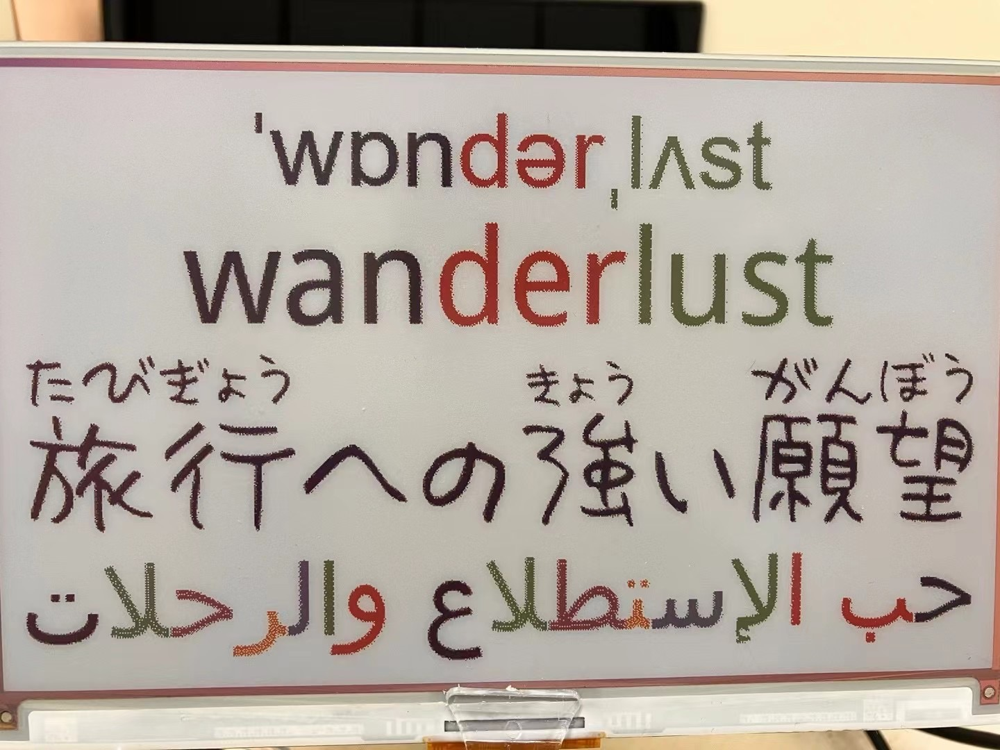
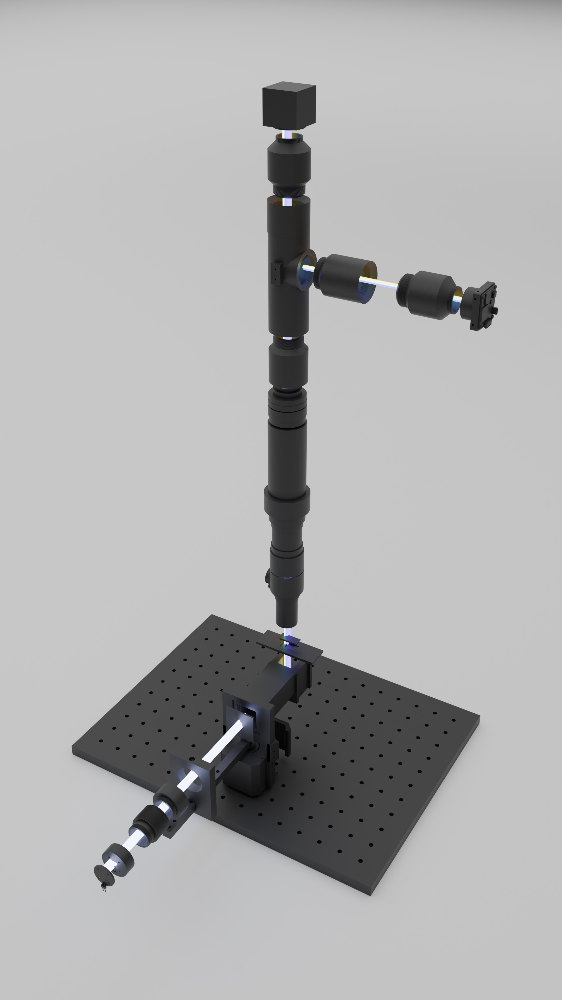

Eink Words Card
E-ink vocabulary companion
Paper-like display for distraction-free reading and long battery life.
Fresh vocabulary cards with clear definitions and pronunciation guides.
Low-power, desk-friendly device for passive review and habit building.
LazyingArt Robot
Modular humanoid for creators and educators
Precision joints, stable stance, and configurable modules for rapid builds.
Extensible architecture for AI experiments, robotics classes, and creative motion.
Lower complexity so you can focus on ideas, interaction, and innovation.
EchoMind
Your Multilingual AI Companion
Choose from multiple AI personalities with distinct voice characteristics
Automatic pronunciation guides and grammar analysis for language learners
Connect with friends, share posts, and practice languages together
OnlyIdeas
只專注於想法的 PaperAgent
Capture concepts fast, then expand with structured sections.
Organize sources and citations while you write.
Export clean drafts for sharing or submission.
LazyEdit Studio
Multilingual Video Editor
Generate timed subtitles across languages with cache control.
Extract keyframes and caption frames for metadata and edits.
Stack multiple languages with ruby, IPA, and layout previews.
MicroQuant
LLM-guided micro quant app
LLM reasoning, tech snapshots, and feature stores unify gold/FX ideas.
Persistent OHLC, preferences, and risk tags keep execution auditable.
MicroQuant bridges research to MT5 with risk budgets, logging, and safety toggles.
AiMemo
Conversational ledger for travel, fitness, and research
Chats, emails, and notes automatically become structured rows you can query instantly.
Calorie logs, trip plans, and lab experiments are grouped by intent and stay synced with IdeasGlass.
Built on AISecretary’s inbox triage and IdeasGlass LLM triggers for email-to-knowledge automation.